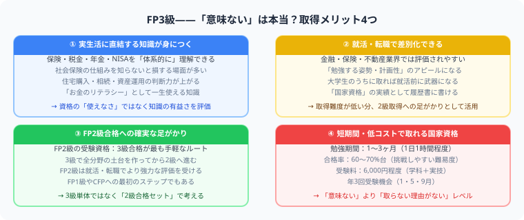

FP3級は意味ない？
合格率70%の資格に価値がある人・ない人
この記事でわかること（5秒まとめ）
- FP3級の合格率は学科・実技ともに例年60〜70%台
- 合格率の高さは「単体では希少価値になりにくい」ことの裏返し
- 就職の決定打としては弱いが、お金の基礎を体系化する入口としては強い
- FP2級や他資格との組み合わせで価値が跳ね上がる
大谷 一輝 より
こんにちは、大谷です！
「FP3級は意味ない」というワードで検索する人の多くは、実は「取ってから後悔したくない」という真面目な人だと思っています。だからこそ、良い面だけでなく合格率のような具体的な数字も含めて、正直に価値を整理しておきます！
また、記事の末尾のほうにある【いいねボタン】をポチッと押してもらえると、めちゃくちゃ嬉しいです！
受験生
FP3級、調べると「意味ない」って言われることも多くて、勉強する意味あるのか不安になってきました……。
大谷（簿記1級勉強中）
正直に言うと、FP3級は合格率が学科・実技ともに例年60〜70%台と、国家資格の中ではかなり易しい部類です。だから「持っているだけで無双できる資格」ではありません。ここは期待しすぎない方がいいです。
受験生
じゃあ本当に意味ないんですか……？
大谷（簿記1級勉強中）
いえ、目的次第です。「これ単体で就職を有利にしたい」なら弱いですが、「お金の基礎知識を体系的に身につけたい」「FP2級や他資格へのステップにしたい」なら十分に価値があります。合格率の高さは、むしろ入口として挑戦しやすいことの証でもあるんです。
❓ まず数字で見る：FP3級の合格率
FP3級の合格率は学科・実技ともに例年60〜70%台です。この数字自体が、FP3級の位置づけを物語っています。
| 資格 | 合格率の目安 |
|---|---|
| FP3級 | 学科・実技ともに60〜70%台 |
| FP2級 | 学科・実技ともに40〜50%台 |
| 日商簿記2級 | 15〜30%台（回により変動） |
合格率が高いことの意味：易しいこと自体は悪いことではありません。ただし「持っているだけで差別化できる」希少性は生まれにくいという点は、正直に理解しておくべきです。

💰 FP3級が向いている人
- お金の勉強を体系的に始めたい人
- 保険・税金・年金・NISAの基本を知りたい人
- FP2級へのステップを作りたい人
- 金融・保険・不動産業界に興味がある人
🔍 FP3級だけでは弱い場面
| 場面 | 理由 |
|---|---|
| 転職で強く見せたい | 金融機関ではFP2級以上が採用・昇進の要件になることが多い |
| 専門家として相談を受けたい | 3級は基礎知識レベル |
| 収入アップに直結させたい | 単体では職務独占資格ではない |
📈 価値を出す使い方
FP3級は、簿記や宅建、証券外務員などと組み合わせると強くなります。簿記で会社のお金、FPで個人のお金を理解すると、金融・会計・不動産まわりの見え方がかなり変わります。特にFP2級への足がかりとして考えると、コストパフォーマンスの良い入口です。
現実的な期待値：「FP3級だけで年収が上がる」という期待は持たない方が良いです。「お金の基礎を体系立てて理解した証明」として、次のステップへの土台に使うのが正しい活用法です。
📋 まとめ：FP3級は「意味ない」のか
合格率学科・実技ともに例年60〜70%台
就職の決定打単体では弱い（FP2級以上が評価されやすい）
生活での価値保険・税金・年金・NISAの基礎が体系化できる
おすすめの使い方FP2級・簿記・宅建等との組み合わせ